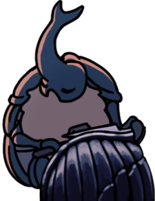

Aqui está o coração do reino. Uma vez, uma cidade próspera, com comércio ativo e uma população que só aumentava. Depois da infecção, apenas a carcaça de moradores ainda fazendo suas funções, controlados, sem qualquer desejo próprio. A ambientação da música com a chuva suave vinda do lago azul acima torna essa uma das áreas mais especiais do jogo, junto a arquitetura diferente, simulando a de formigas na vida real.
Aqui está o coração do reino. Uma vez, uma cidade próspera, com comércio ativo e uma população que só aumentava. Depois da infecção, apenas a carcaça de moradores ainda fazendo suas funções, controlados, sem qualquer desejo próprio. A ambientação da música com a chuva suave vinda do lago azul acima torna essa uma das áreas mais especiais do jogo, junto a arquitetura diferente, simulando a de formigas na vida real.
"A entrada para o reino foi proibida há muito tempo, supostamente após uma grande calamidade. Muitos portões se fecharam,
mas o nosso antigo poço permanece como uma forma de entrada.
Ao longo dos anos, todos os tipos de insetos usaram o poço para entrar nas ruínas, viajantes, ladrões, aventureiros.
Engraçado como poucos voltam. Talvez eles encontraram o que estão procurando?..
Bah, não sou tão ingênuo. Sem dúvida, todos foram engolidos! Existem inúmeros perigos nessas profundezas."
- Inseto Ancião